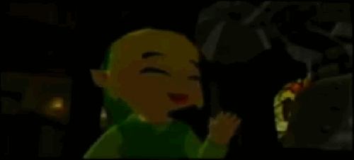
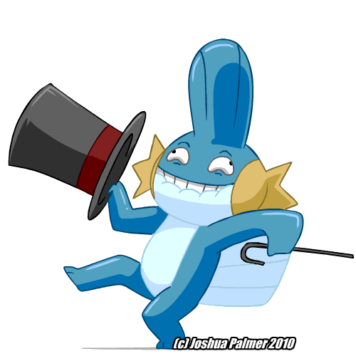
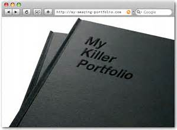
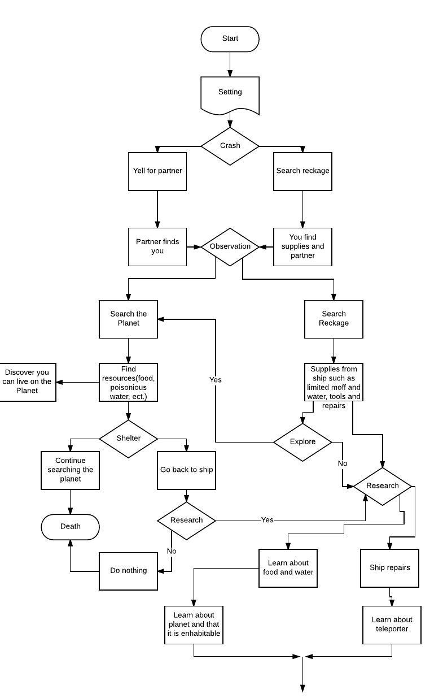
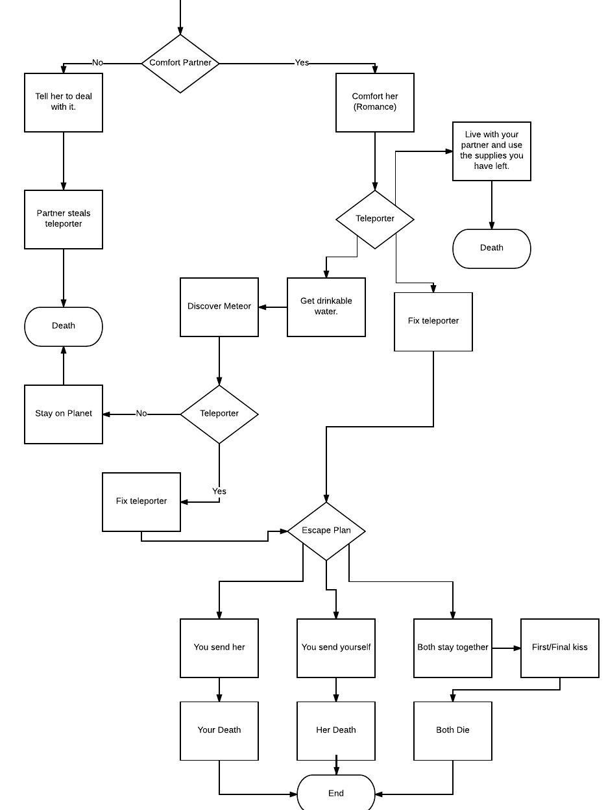
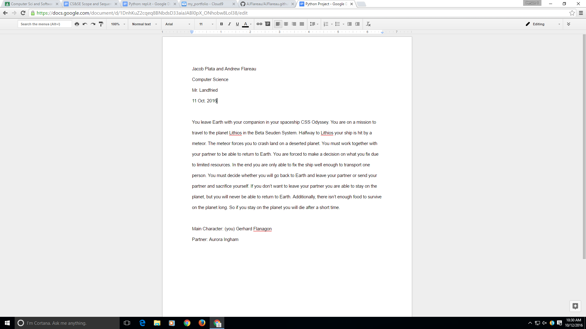

This is my Killer Portfolio so far.

This is the game I made with Jason Betsargon.
We both collaborated on the project and had trouble with the enemies and backdrops.We got everything we needed to done at the end. My favorite part of the game is the dying sound.The most difficult part was to make the enemies move in their designated places. Also we had trouble making stuff with the chest, like obtaining the keys.
This is the flow chart that I have made with Jacob Plata.


